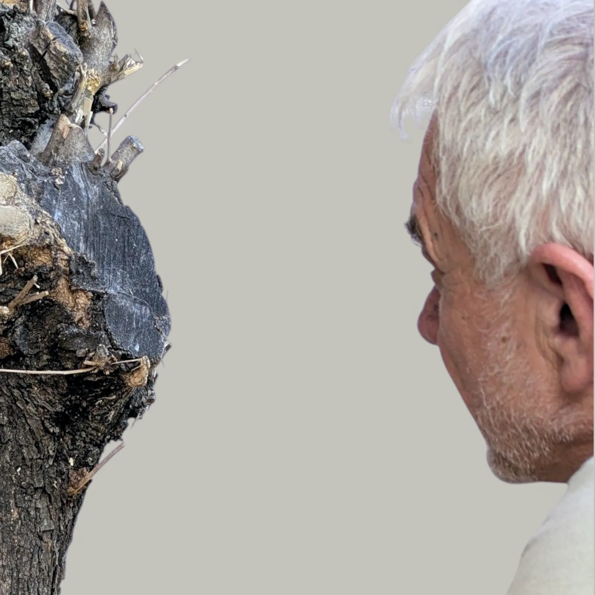

Escultor
Desertor Constructor
Luis González Palacios (Lerma, Burgos, 1959) vive y trabaja en Castellón. Tras treinta y cinco años en la docencia, se dedica por completo a la escultura. Trabaja exclusivamente con material rescatado: acero industrial, madera de olivo abandonada y componentes mecánicos obsoletos.
Su obra se ha mostrado en Akelarre Art Fair (Madrid, 2025), Marbella Art Fair (2026), la 46 Muestra Internacional de Arte Contemporáneo del Museu Etnogràfic de Ripoll (2026) y en la Galería Mariam Cremades (Alicante, 2025 y 2026). Ha sido finalista del XI Certamen Nacional de Escultura de San Bartolomé de la Torre y del III Concurso Internacional de Escultura ICRE (Barcelona).

En el taller
Statement
Todas mis obras surgen del mismo gesto: rescatar materiales expulsados de su función y construir con ellos lugares donde la memoria pueda permanecer.
Trabajo con acero industrial, madera de olivo abandonada y componentes mecánicos obsoletos. Lo que fue útil y ya no lo es me ofrece, paradójicamente, un lugar. No le impongo una forma: escucho la que propone.
Construyo desde la deserción, que no entiendo como huida sino como negativa a seguir dentro de una lógica que borra lo que ya no produce. Y el presente entra en el taller mientras trabajo: se deposita en la materia y exige forma.
Mi práctica atraviesa la escultura y la poesía. En los Poemas Materiales se encuentran.
Currículum
2026
2025
2023
2022
Colecciones
Portfolio en galería
Ver portfolio en 1819 Art Gallery →